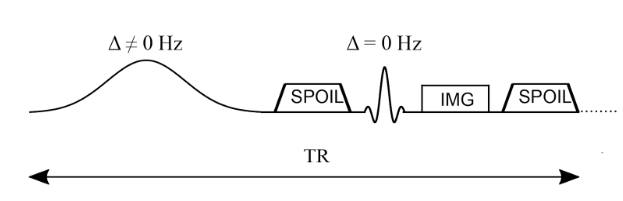
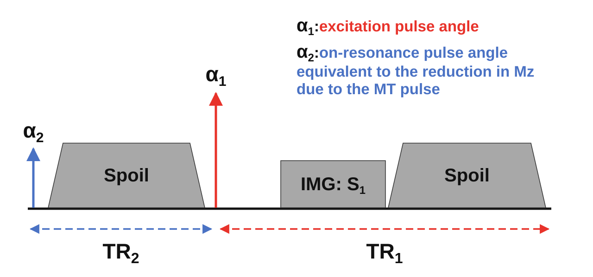
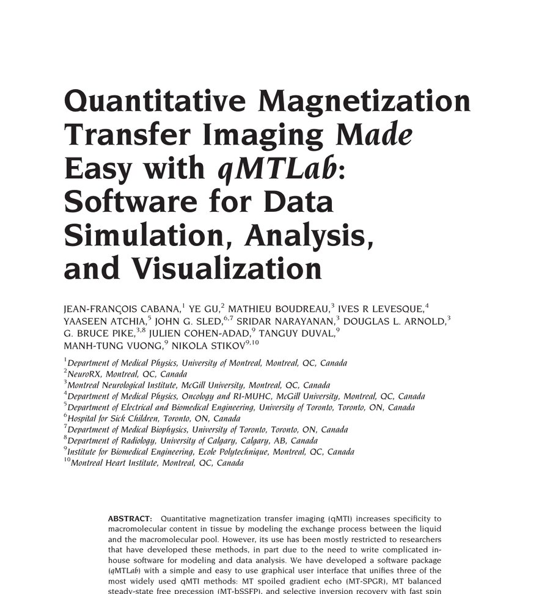
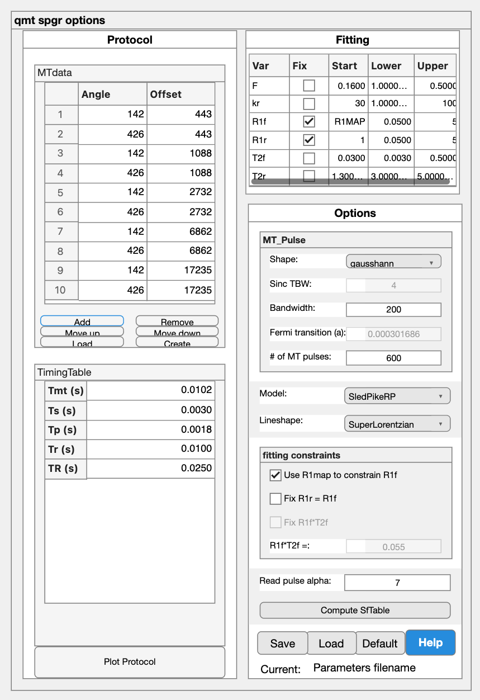
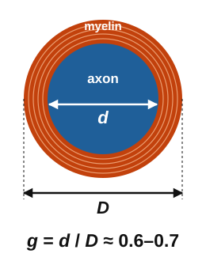
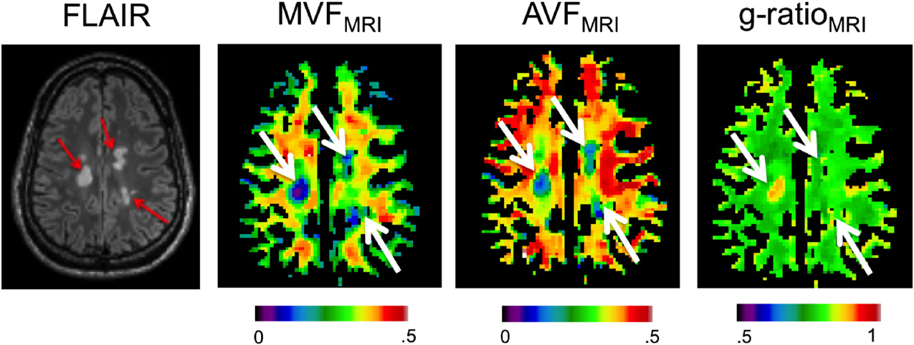

qMRI mOOC · Chapter 6
Magnetization Transfer
qMT · MTR · MTsat
A tale of two timescales
Slow decay
- T2 of tens of ms: lasts long enough to read out and make an image
Fast decay
- ~10 % of the signal, T2 of ~10 µs: gone within the first 0.1 ms after the pulse

Mobile and restricted protons
Mobile: water
- Tumbles in picoseconds: each proton's neighbours keep moving, their fields average out
- Slow decay, T2 of tens of ms
Restricted: macromolecules
- Protons of solids and semi‑solids; macromolecules count as semi‑solids
- Locked in place: the neighbours' fields stay put
- Fast decay, T2 ~10 µs
Decay ⇄ lineshape
The decay (FID)
Its Fourier transform: the lineshape
Mobile: water
- Long, exponential decay
- Narrow Lorentzian line, a few Hz wide
Restricted: macromolecules
- Fast, not exponential: half gone in ~40 µs, then a slow tail
- Broad super-Lorentzian line, kHz wide
Where it happens: myelin
The model behind it: Bloch-McConnell
F: the pool size ratio, restricted over free. Δ: the RF's offset from the water resonance (rad/s); ω1: its amplitude. No transverse M for the restricted pool: its T2 is too short. The RF only saturates it, at the rate W.
MT off vs MT on
- The same image, acquired twice
- MT on: an off-resonance RF before each readout
- Where there are more macromolecules (myelin), the signal drops more
White matter keeps – of its signal; grey matter keeps –.
A 3 T brain (2013 qMT dataset), RF at 1.1 kHz from water. Hover to read the values; the right panel can show the ratio.
MT-based mapping methods we’ll cover
MTR
Quick, semi‑quantitative
Two images: MT on and MT off
MTsat
Quick, and robust to T1
Three images; T1 is corrected for
qMT
Fully quantitative
Many images, fitted with the two‑pool model
We’ll present the implementations that use an MT-prepared spoiled gradient echo (MT-SPGR).
The MT-prepared SPGR
- MT pulse: ~10 ms, 1–5 kHz off resonance, 200°–700°, smooth shape (one frequency)
- Spoiler: removes the pulse's transverse M
- Readout: a normal SPGR, 5°–10°
- Repeated every TR (~25–35 ms) to a steady state
- MT off: same timing, no pulse (or far off, ~30 kHz)
Drawn to scale: Karakuzu 2022 (Siemens) MT-weighted image. The MT pulse oscillates at its 1.2 kHz offset in the rotating frame.
- 2 acquisitions: MT off (S0) and MT on (SMT)
- $$\text{MTR} = \frac{S_0 - S_{MT}}{S_0}\times 100\,\%$$
- Units: % of the MT-off signal. White matter: about 30–60 %, depending on the protocol
- MT pulse: typically ~500–600° at ~1–1.5 kHz off resonance, but each manufacturer's protocol differs
MTR of the 3 T brain (2013 qMT dataset), MT pulse at 1.1 kHz, 426°: white matter –, grey matter –.
Benefits
- Available on most scanners
- Fast to acquire: two images
- Fast to process: one division
Pitfalls
- Not a tissue-specific property: it depends on the sequence as much as on the tissue
- Highly sensitive to B1+ inaccuraciesB1 10 % low: white matter 44.5 % instead of 47.5 %
- Sensitive to T1, independently of any change in myelinT1 20 % longer, same myelin: 51.5 % instead of 47.5 %
- Values vary between vendors: each sets its own MT pulse, which users typically cannot changeWhite matter across four vendor protocols: 37 to 52 %
Numbers: two-pool simulation of healthy white matter, Karakuzu 2022 Siemens MTR protocol unless stated (vendor protocols: the chapter's Table 6.2).
- From Helms et al. (2008)
- Models the MT pulse as if it were a second, instantaneous RF pulse of some flip angle α2 that saturates water
- MTsat is the fraction of water's Mz that this pulse removes each TR, at steady state:$$\text{MTsat} = \delta = 1 - \cos\alpha_2$$
- Units: % (δ × 100), per TR. White matter: about 2–7 %, depending on the protocol


| Image | MT pulse | FA | TR | |
|---|---|---|---|---|
| MTw MT on | 540°, 2.2 kHz, 12.8 ms | 5° | 25 ms | MTR measurement |
| PDw MT off | none | 5° | 25 ms | |
| T1w | none | 15° | 11 ms | + 1 more |
Helms et al. (2008). Other protocols: the chapter's Table 6.4
Benefits
- Insensitive to T1T1 20 % longer, same myelin: 6.2 % instead of 6.1 %
- 1 extra image, 2 extra maps: T1 and MTsat, with MTR still for free
- Still fast: a direct calculation, no fitting
- Seems more sensitive to myelin change than MTR, e.g. in early multiple sclerosisLema et al. 2017; York et al. 2022
Pitfalls
- Still not a tissue-specific property
- Still sensitive to B1+, inherently: MTsat is largely the effect of a single MT pulse, and a weaker pulse truly saturates lessB1 10 % low, flip angles corrected with a B1 map: 5.4 % instead of 6.1 %
- A different scale than MTR: both in %, but not comparableSame white matter, same scan: MTR 47.5 %, MTsat 6.1 %
- Still protocol dependent: values vary across sitesWhite matter across six protocols: 1.8 to 7.4 %
Numbers: two-pool simulation of healthy white matter, Karakuzu 2022 Siemens MTsat protocol unless stated (protocols: the chapter's Table 6.4).
- Many approaches exist, but mainly: take many acquisitions, then fit the Bloch–McConnell equations for the key parameters (F, kf, T2,f, T2,r)
- Most often, you also need additional acquisitions: B1, T1, and/or B0 maps
- For this MOOC, we only cover the SPGR-based version (MT‑SPGR)

Z-spectrum: the MT-weighted signal (normalized by MT off) against the offset frequency of the MT pulse, at one or more MT pulse powers
| Readout | SPGR, 7°, TR 25 ms |
|---|---|
| MT pulse | Gauss-Hann, 10.24 ms |
| MT angles | 142° and 426° |
| Offsets | 443, 1088, 2732, 6862, 17235 Hz |
| Images | 2 × 5 = 10 MT on, + 1 MT off |
- Also requires B1, B0 and T1 maps
- Total acquisition time is long: whole brain at 1 mm, 11 × 3 min 7 s ≈ 34 min, before the extra maps
Fit the two-pool model to each voxel's Z-spectrum. Different models make different approximations, suited to different acquisitions:
Sled & Pike 2000, 2001
Models the shaped, pulsed MT saturation of both pools
The most general
Ramani et al. 2002
Replaces the pulses with continuous-wave irradiation of the same power
Yarnykh 2002
Pulsed model that neglects water's direct saturation: for fast protocols with few offsets
Other choices in the software
- Lineshape of the restricted pool: depends on what you measure
- Agar gel: Gaussian
- Tissue: super-Lorentzian
- Which parameters to fit, and which to fix (e.g. R1,r = 1 s−1)
Don't try to implement qMT yourself: use one of the available open-source packages, such as qMRLab

- Robust to B0, B1 and T1 variations: they are measured and included in the model
- But not inherently to inaccuracies in those maps (Boudreau et al. 2018)
B1 map 10 % low: F +29 %
T1 map 10 % low: F +11 %, kf +12 %
B0 map 20 Hz off: T2,f −8 %
Coming up, in an exercise: how sensitive are MTR, MTsat and qMT to these?
| MTRSemi-quantitative | MTsatSemi-quantitative | qMTQuantitative | |
|---|---|---|---|
| Images | 2: MT on, MT off | 3: + a T1w | 10+, and B0, B1, T1 maps |
| Acquisition | Short | Short | Long |
| Processing | One division | Closed form, no fitting | Model fit, voxel by voxel |
| Outputs | MTR (%) | MTsat (%), T1, MTR | F, kf, T2,f, T2,r |
| Healthy WM | 30–60 % | 2–7 % | F ≈ 15–25 % |
| Depends on the protocol | Strongly | Yes | Little |
| Depends on T1 | Yes | Mostly removed | Modelled (T1 map) |
| Depends on B1 | Yes | Yes, inherently | Modelled, but sensitive to B1 map errors* |
* Unless the protocol is designed for it: qMT protocols can be optimized to be insensitive to B1 errors (Boudreau 2018a, b)
Why understanding MT is important
Its effects impact every pulse sequence:
- Any RF pulse saturates the restricted pool a little, on resonance too
- Multi-slice imaging: the other slices' pulses are off-resonance MT pulses for this one (Santyr 1993)
- Spin-echo trains (many 180°s): the 180°s saturate the macromolecules, so T2 reads low (Radunsky 2019)
- T1 mapping depends on the method (Assländer 2025)
T1 in white matter: one brain, three methods
This course's volunteer at 3 T, same white-matter voxels; VFA B1-corrected
VFA reads the longest, as in Stikov et al. (2015). Each method's RF pulses saturate the macromolecules differently, and a single-T1 fit ignores the two-pool recovery: MT explains most of the T1 spread in the literature (Assländer et al. 2025).
Application: g-ratio mapping in vivo
κ calibrated against electron microscopy in the macaque (Stikov 2015)
NODDI: viso free water (CSF), vic intra-axonal share of the rest
Healthy WM ≈ 0.7; MS lesions 0.80 vs 0.75 in normal-appearing WM


Key takeaways
- Macromolecular protons are invisible (T2 ≈ 10 µs), but their broad line lets an off-resonance pulse saturate them
- Exchange passes that saturation to water: less signal where there are more macromolecules
- MT is sensitive to myelin but not specific to it: every macromolecule carrying 1H protons contributes
- MTR is one point of the Z-spectrum: quick, but it also measures the protocol, T1 and B1
- MTsat models the MT pulse as an extra flip: T1 removed, the whole MT loss per TR, still B1- and protocol-dependent
- qMT fits the two-pool model to the Z-spectrum: quantitative, but slow and map-hungry